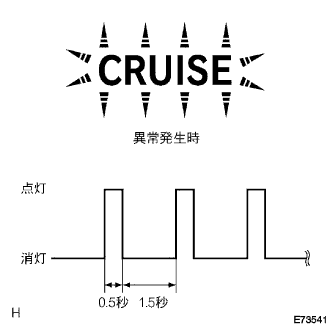

Radar Cruise Control System Function Description |
 |
If a malfunction occurs in the radar cruise control system, the system blinks the "CRUISE" indicator as shown in the illustration and stores the diagnosis results in the engine control computer.
If any of the following conditions occur, the system erases the stored vehicle speed and cancels cruise control. At this time, the "CRUISE" indicator blinks until the main switch is next turned ON, the master warning light comes on with a "beep" warning sound, and "Cruise System Check" is shown on the display. Cruise control is prohibited until the main switch is turned ON again.
Vehicle Speed Signal Malfunction
When the stop light switch assembly has an open or short circuit
If any of the following conditions occur in vehicle-to-vehicle distance control mode, the system erases the stored vehicle speed and cancels cruise control. At this time, the "CRUISE" indicator blinks until the main switch is next turned ON, the master warning light comes on with a "beep" warning sound, and "Cruise System Check" is shown on the display. Cruise control is prohibited until the ignition switch is turned ON (IG) again.
When the radar sensor malfunctions
When the radar sensor beam axis is misaligned
If any of the following conditions occur in vehicle-to-vehicle distance control mode, cruise control is canceled while the stored vehicle speed is retained. At this time, the master warning light comes on with a "beep" warning sound and "Radar Dirty Clean Required" is shown on the display. Cruise control is prohibited until the condition that caused the cancellation is cleared. Control is prohibited until the cancel condition is cleared or the main switch is turned ON again.
When the radar sensor is dirty
If any of the following conditions occur in vehicle-to-vehicle distance control mode, cruise control is canceled while the stored vehicle speed is retained. At this time, the master warning light comes on with a "beep" warning sound and "Bad Weather Cruise Unavailable" is shown on the display. Cruise control is prohibited until the condition that caused the cancellation is cleared. Control is prohibited until the cancel condition is cleared or the main switch is turned ON again.
When the wipers operate at Hi
When distance measurement is extremely unstable due to bad weather
If any of the following conditions occur, the system erases the stored vehicle speed and cancels cruise control.
When an electronic throttle component malfunctions